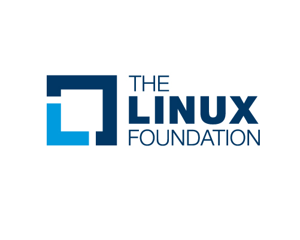
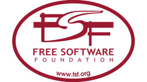
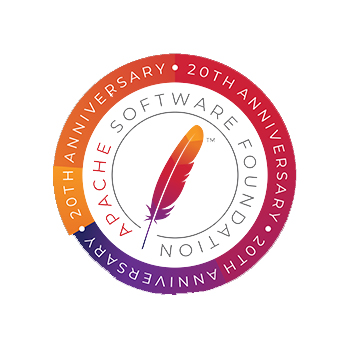

The Linux Foundation was founded in the year 2000, it sponsors the work creator of the Linux Kernel Linus Torvalds and is dedicated to fostering the growth of Linux. It's supported by leading technology companies like Microsoft, IBM, Oracle and many more. It's also supported by developers around the world. It has a 'A proven and repeatable way to scale project communities via a comprehensive portfolio of support programs for aspiring industry leading projects'. This includes multile parts to their method, which are giving the project a neutral hone and emphasising the importance collaboration, helping them with ecosystem curation and buliding their community, helping them make their project enterprise ready the open source way and finally helping them with project insights and management tools.
The Free Software Foundation's (FSF) mission is to defend computer users' freedom and rights. It promotes the "development and use of free (as in freedom) software and documentation" and campaigns against digital rights management, software patents, and other threats to computer user freedom. They also fight for user's freedoms to run, edit, contribute to share any piece of software. They see free(as in freedom) software as a matter of Liberty, not price. They being fighting for user's rights for the past 35 years. They also support many initiatives that support user freedoms, privacy, free software, events like librePlanet, licensing, computer hardware rights and the GNU project.
The Apache software foundation was established in 1999, the ASF is a US 501(c)(3) charitable organization, funded by individual donations and corporate sponsors. They have an all-volunteer board oversees more than 350 leading Open Source projects, including Apache HTTP Server which is the world's most popular Web server software. The Apache Software Foundation provides organizational, legal, and financial support for a broad range of open source software projects. The foundation provides an established framework for intellectual property and financial contributions that simultaneously limits the contributors' potential legal exposure.
Linux Professional Institute (LPI) which was founded in 1999 is a Canadian nonprofit organization that advocates for and assists in the professional use of GNU/Linux, open source and free software. Its purpose is to "enable economic and creative opportunities for everybody by making open source knowledge and skills certification universally accessible." By doing this they are hoping to transfer economic ownership out of the hands of the few into the hands of the many. By doing so, liberating people, and improving the quality of life for populations around the world.
|  |  |
|  |